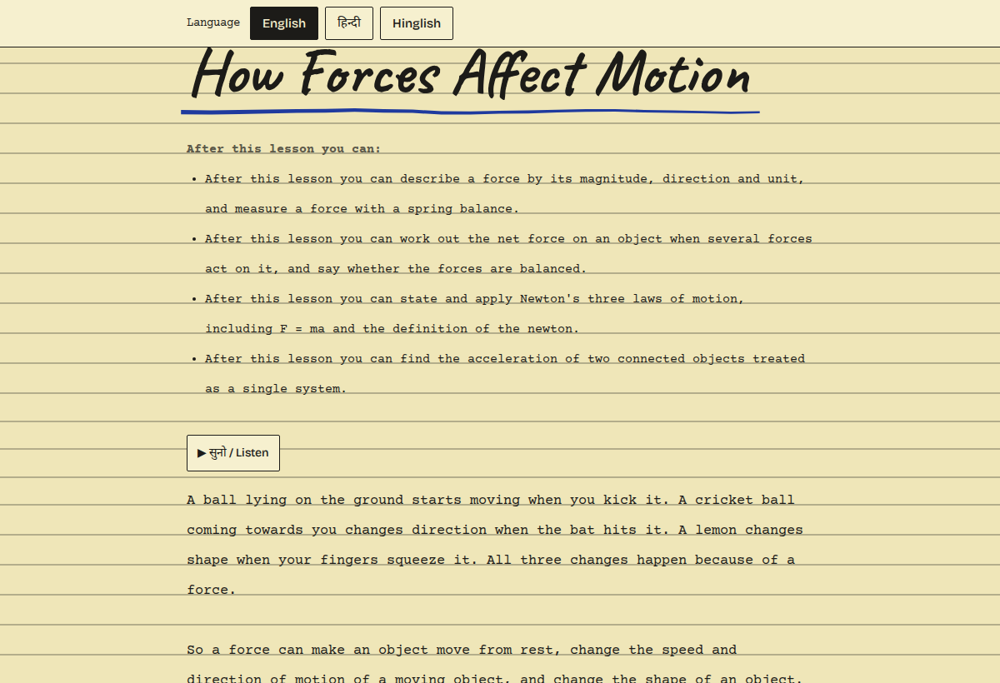
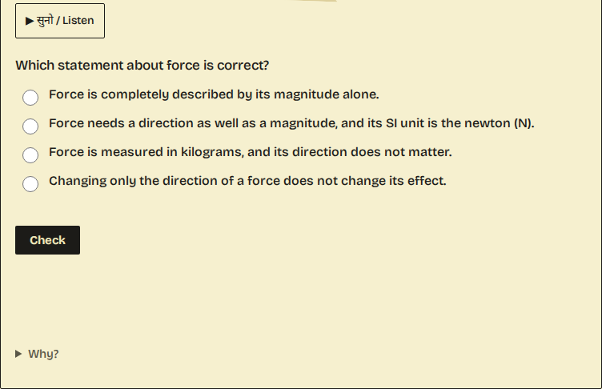

Build log · 16 Nov 2026
The notebook that talks back.
I’m building Physics pages that answer: real NCERT chapters, cited sources, a patient voice, and the working shown. Read one — no account.
Sample turn “Sir, net force ka matlab kya hai?” — then the page answers.

Before
The page used to be a still picture.
A PDF you scroll. A video you rewind. A doubt you keep until class.
After
The page answers where you are reading.
It points at the paragraph, explains in your language, and asks you to check. The source stays on the page.
The point is not “more content”. It is one page that does the thing a page cannot normally do: answer the question you have while you are reading it.
That is why the lesson is the product, and the tutor is inside it.
The log
The log is the proof.
What shipped, what broke, what is next. Dates are real; the numbers are dated. If something is not ready, it says so here.
done
done
done
done
in progress
How a page is made
The working is part of the proof.
No scraping. No mystery content. A page is a source pack, a rewrite, a review, a translation and a publish.
- 01
Source.
NCERT and public-domain material, with the chapter and licence recorded.
- 02
Write.
A full chapter: text, diagram, a check and a worked step — not a summary.
- 03
Review.
The maths, the source claim, the accessibility and the code are checked before publish.
- 04
Translate.
English, Hindi and Hinglish. A missing translation blocks a live page; it does not silently fall back.
- 05
Publish.
A static page, its source footer, and pre-generated narration. No runtime credits for reading.
The page, up close
A real page, not a mockup.
This is a capture of the live Class 9 check. The tutor’s transcript beside it is the sample; the check is the real thing.

Ask this paragraph
“Sir, net force ka matlab kya hai? Yahan 10 N aur 6 N same direction mein hain.”
“Net force is the single force left after adding them. Same direction, so add: 10 + 6 = 16 N to the right. The diagram in this paragraph shows it.”
Sample transcript · the page is the anchor. A consented recording replaces it before launch.
The check is typed, sourced and translated. The tutor is an addition, not a replacement for the reading.
Sources
Every page has a paper trail.
The footer is not decorative. It names the book, the chapter and the licence.
| Page | Source | Licence |
|---|---|---|
| How forces affect motion | NCERT Science, Grade 9 (2025) | Free educational use |
| Motion | NCERT Science, Grade 9 (2025) | Free educational use |
| Units and Measurement | NCERT Physics, Grade 11 | Free educational use |
Coverage
Six pages live. Three languages.
A small catalogue, stated exactly. The next pages are in the log, not on the shelf.
| Class | Pages | Languages |
|---|---|---|
| Class 9 | Motion · How forces affect motion | English · हिन्दी · Hinglish |
| Class 11 | Units and Measurement · Motion in a Straight Line · Motion in a Plane · Laws of Motion | English · हिन्दी · Hinglish |
| Class 10 | in progress | — |
| Class 12 | in progress | — |
Privacy
The page is public. The student is not.
- Audio
- Not kept. Speech is transcribed and discarded.
- Transcript
- Text for 7 days server-side, deletable from Settings.
- Access
- No parent view, no ads, no leaderboard, no sale of data.
Who is building this
I’m Archit. I’m building this in public.
The log above is the evidence, including the parts that are not ready. If you find a mistake in a page, tell me; the report button is on every lesson. The next batch is Class 10 and practice, and I will not pretend it is done before it is.
Archit · 16 Nov 2026
Still wondering
Questions about the build.
Is this a real product or a mockup?
The six pages are live; the screenshot above is a capture of one. The voice transcript is a sample until a consented recording is ready.
Why build in public?
So you can see the sources, the review gates and what is not ready. A launch page can be honest without being vague.
Is it free?
Yes during launch. Voice has a small daily credit budget; reading, simulations, checks and typing stay free.
Is it CBSE?
The lessons are written from NCERT and are not affiliated with CBSE. Board-pattern practice, when it ships, says “not an official CBSE paper”.
Who is the tutor?
A patient voice tutor, not a named persona. It explains the page, asks you to check, and keeps the source visible.
Can I see the source?
Yes. Every lesson has a source footer, and the source ledger above names the book and licence.
Read the page. Then ask it why.
Start with Class 9 · Force and Laws of Motion. No account. Six pages live.